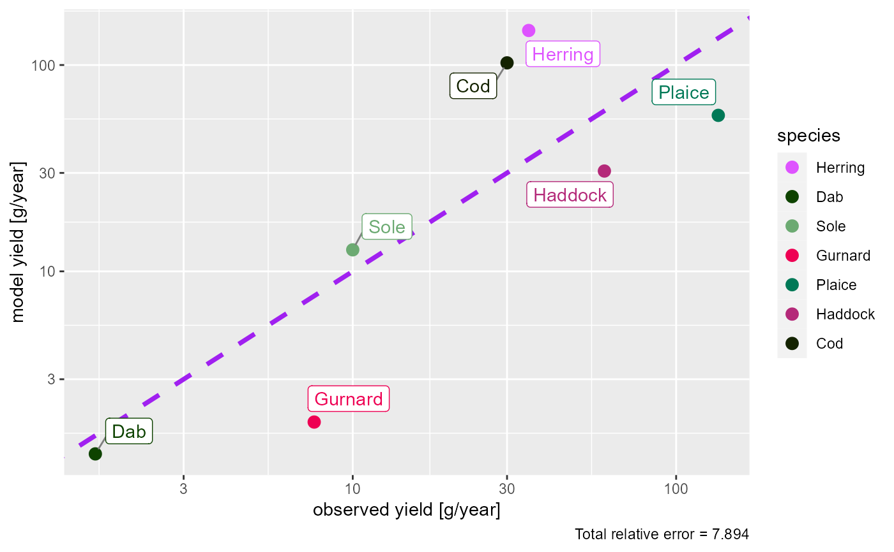
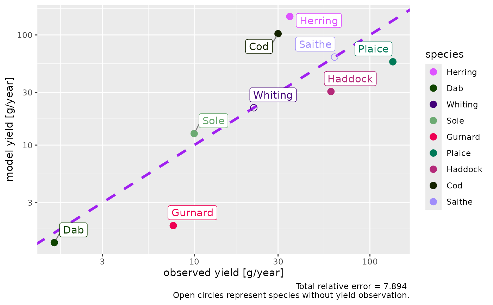
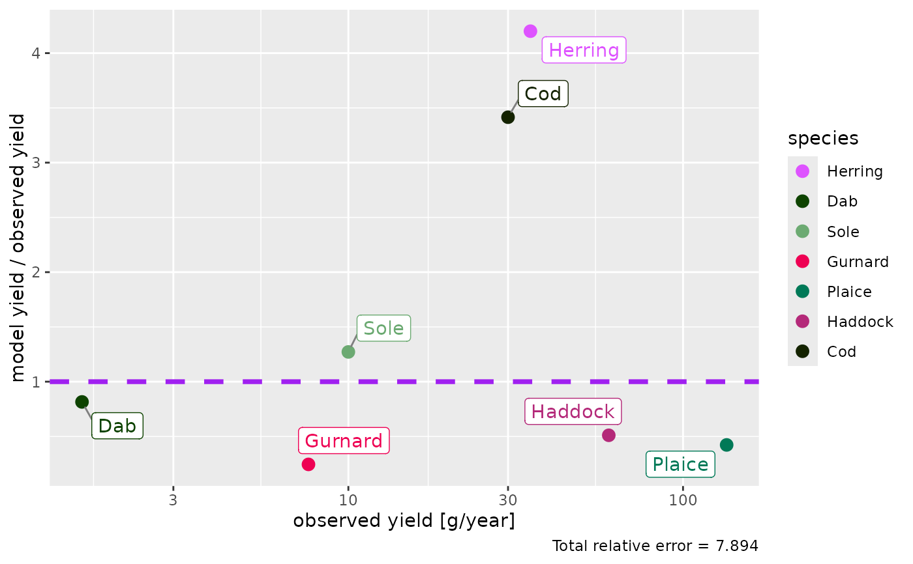

![[Experimental]](figures/lifecycle-experimental.svg) If yield observations are available for at least some species via the
If yield observations are available for at least some species via the
yield_observed column in the species parameter data frame, this function
plots the yield of each species in the model against the observed
yields. When called with a MizerSim object, the plot will use the model
yields predicted for the final time step in the simulation.
Usage
plotYieldObservedVsModel(
object,
species = NULL,
ratio = FALSE,
log_scale = TRUE,
return_data = FALSE,
labels = TRUE,
show_unobserved = FALSE
)
plotlyYieldObservedVsModel(
object,
species = NULL,
ratio = FALSE,
log_scale = TRUE,
return_data = FALSE,
show_unobserved = FALSE
)Arguments
- object
An object of class MizerParams or MizerSim.
- species
The species to be included. Optional. By default all observed yields will be included. A vector of species names, or a numeric vector with the species indices, or a logical vector indicating for each species whether it is to be included (TRUE) or not.
- ratio
Whether to plot model yield vs. observed yield (FALSE) or the ratio of model : observed yield (TRUE). Default is FALSE.
- log_scale
Whether to plot on the log10 scale (TRUE) or not (FALSE). For the non-ratio plot this applies for both axes, for the ratio plot only the x-axis is on the log10 scale. Default is TRUE.
- return_data
Whether to return the data frame for the plot (TRUE) or not (FALSE). Default is FALSE.
- labels
Whether to show text labels for each species (TRUE) or not (FALSE). Default is TRUE.
- show_unobserved
Whether to include also species for which no yield observation is available. If TRUE, these species will be shown as if their observed yield was equal to the model yield.
Value
A ggplot2 object with the plot of model yield by species compared
to observed yield. If return_data = TRUE, the data frame used to
create the plot is returned instead of the plot.
Details
Before you can use this function you will need to have added a
yield_observed column to your model which gives the observed yield in
grams per year. For species for which you have no observed yield, you should set
the value in the yield_observed column to 0 or NA.
The total relative error is shown in the caption of the plot, calculated by $$TRE = \sum_i|1-\rm{ratio_i}|$$ where \(\rm{ratio_i}\) is the ratio of model yield / observed yield for species i.
Examples
# create an example
params <- NS_params
species_params(params)$yield_observed <-
c(0.8, 61, 12, 35, 1.6, NA, 10, 7.6, 135, 60, 30, NA)
params <- calibrateYield(params)
# Plot with default options
plotYieldObservedVsModel(params)
#> The following species are not being fished in your model and will not be included in the plot: Sprat, Sandeel, N.pout.

# Plot including also species without observations
plotYieldObservedVsModel(params, show_unobserved = TRUE)
#> The following species are not being fished in your model and will not be included in the plot: Sprat, Sandeel, N.pout.

# Show the ratio instead
plotYieldObservedVsModel(params, ratio = TRUE)
#> The following species are not being fished in your model and will not be included in the plot: Sprat, Sandeel, N.pout.
